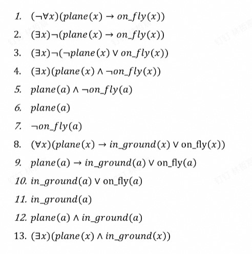
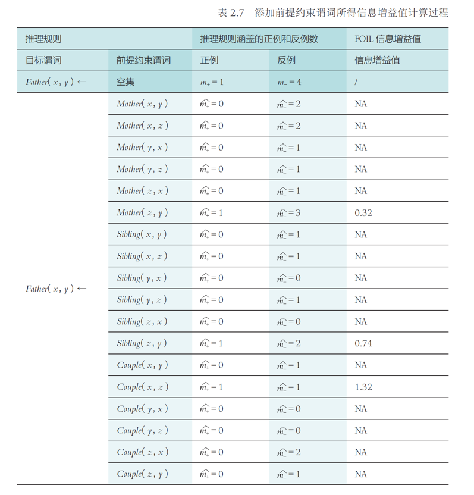
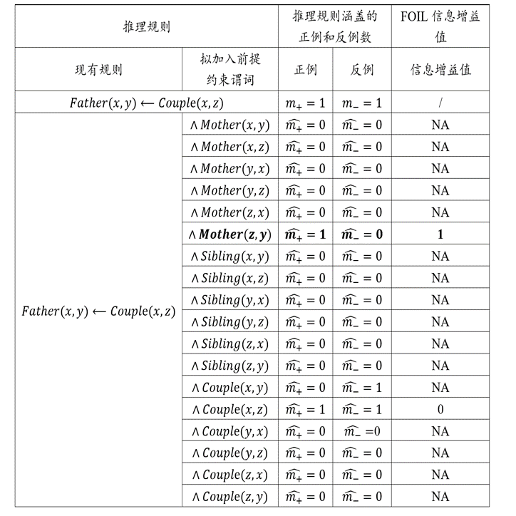
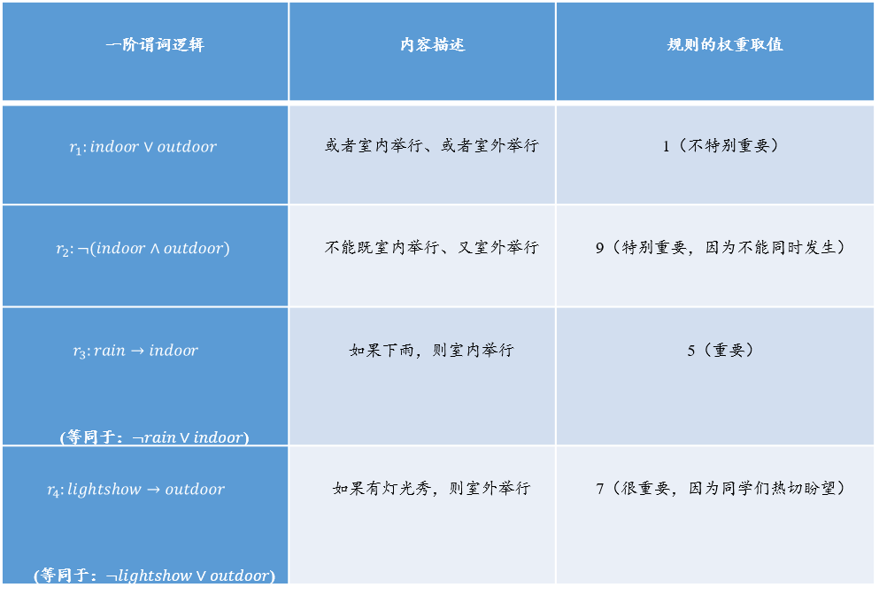
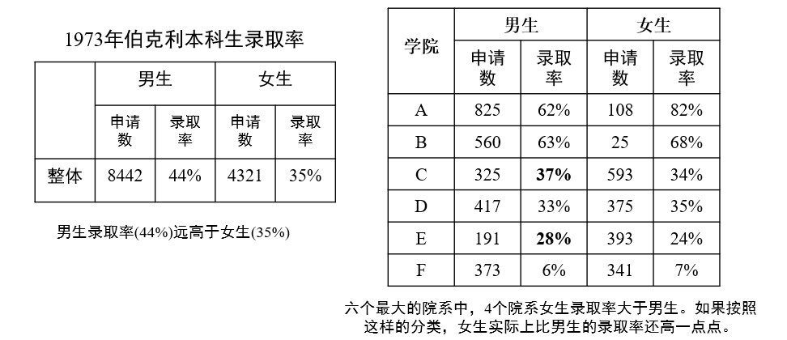
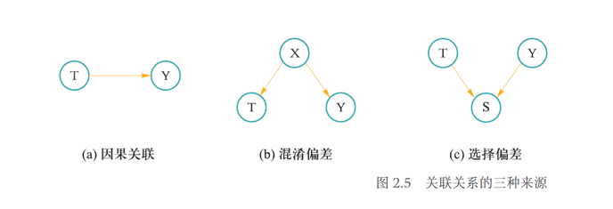
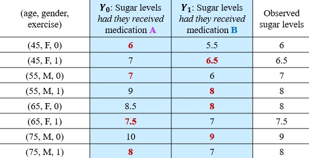
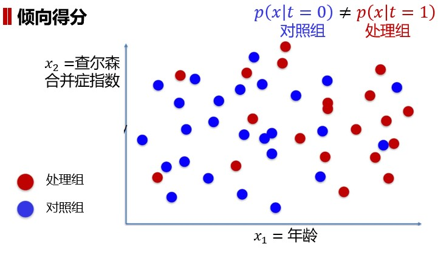
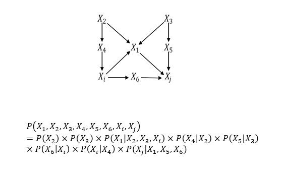
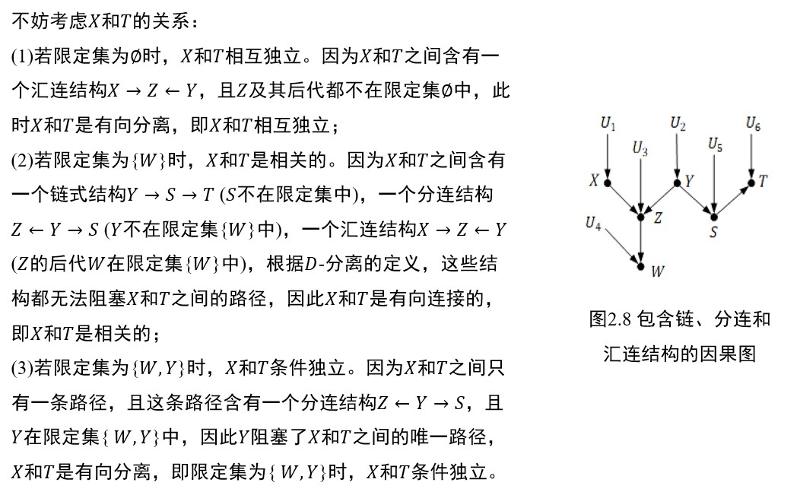

Chapter 1 逻辑与推理
1.1 命题逻辑
原子命题： 在命题逻辑中，一个或真或假的描述性陈述被称为原子命题，对原子命题的内部结构不做任何解析。 若干原子命题可通过逻辑运算符来构成复合命题。
范式： 有限个简单合取式构成的析取式称为析取范式。 有限个简单析取式构成的合取式称为合取范式。 析取范式与合取范式统称为范式。
1.2 谓词逻辑
例：已知每架飞机或者停在地面或者飞在天空，且并非每架飞机都飞在天空，求证：有些飞机停在地面。 形式化： plane($x$)：$x$是飞机 in_ground($x$)：$x$停在地面 on_fly($x$)：$x$飞在天空 已知： ($\forall x$)(plane($x$)$\rightarrow$in_ground($x$)$\vee$on_fly($x$)) ($\neg\forall x$)(plane($x$)$\rightarrow$on_fly($x$)) 求证： ($\exist x$)(plane($x$)$\wedge$in_ground($x$)) 
1.3 知识图谱推理
知识图谱由有向图构成，用于描述实体与实体之间的关系，实体用节点表示，节点之间的连线表示关系。

以上图为例，红色虚线表示我们想要推理得到的关系。如果定义以下推理规则： $(\forall x)(\forall y)(\forall z)(Mother(z,y)\wedge Couple(x,z)\rightarrow Father(x,y))$ 就可在现有知识$Mother(James,Ann)$和$Couple(James,David)$基础上进行推理，得到新的知识$Father(David,Ann)$。
法一：归纳逻辑程序设计（ILP）
ILP使用一阶谓词逻辑进行知识表示，通过修改和扩充逻辑表达式对现有知识进行归纳，完成推理任务，得到普适性的推理规则，再根据该推理规则得到结论。对于本例，需要依据给出的知识图谱，推理得到以下规则：
$(\forall x)(\forall y)(\forall z)(Mother(z,y)\wedge Couple(x,z)\rightarrow Father(x,y))$
然后推得新的知识。
代表：FOIL归纳推理
输入：目标谓词$P$（规则头），$P$的正例，$P$的反例，其他背景知识
输出：归纳推理得到的规则
步骤： 1. 假设前提约束谓词$A_1，A_2，···，A_n$，对于不同的$A_i$得到假设推理规则：$A_i\rightarrow P$ 2. 对于不同的假设推理规则，分别计算FOIL信息增益值： $FOIL_Gain=\widehat{m_+}\cdot(\log_2\frac{\widehat{m_+}}{\widehat{m_+}+\widehat{m_-}}-\log_2\frac{m_+}{m_++m_-})$ 其中，$\widehat{m_+}$和$\widehat{m_-}$分别是增加前提约束谓词后所得到的新推理规则的正例数和反例数，$m_+$和$m_-$分别是原推理规则的正例数和反例数 3. 选取能带来最大信息增益值的前提约束谓词（例如$A_k$）加入到原来的推理规则，得到新的推理规则，然后更新正反例 4. 在新的推理规则下从步骤1开始重复，直到没有反例，所得到的规则就是要目标
对于本例，目标谓词$P$为： * $Father(x,y)$
$P$的正例为： * $(David,Mike)$
$P$的反例为： * $(David,James)$ * $(James,Ann)$ * $(James,Mike)$ * $(Ann,Mike)$ （从知识图谱得知，有其他非父子关系的人肯定是反例，简单起见只写这四个）
其他背景知识： * $Couple(David,James)$ * $Mother(James,Ann)$ * $Mother(James,Mike)$ * $Sibling(Ann,Mike)$ （同样为了简单起见只写这四个）
步骤1和步骤2：

给定目标谓词$Father(x,y)$，此时推理规则只有目标谓词，因此推理规则所覆盖正例和反例样本数分别是训练样本中正例和反例的数目，即1和4，因此$m_+=1$，$m_−=4$。
分析案例1： 如果将$Mother(x,y)$作为前提约束谓词加入推理规则，可得到$Mother(x,y)\rightarrow Father(x,y)$。在表中所提供背景知识中，$Mother(x,y)$有两个实例，即$Mother(James, Ann)$和$Mother(James, Mike)$。对于$Mother(James, Ann)$这一实例，$x=James$，$y=Ann$，将$x$和$y$代入$Father(x,y)$得到$Father(James, Ann)$，为反例；同理，另一个也是反例。因此推理规则$Mother(x,y)\rightarrow Father(x,y)$所覆盖的正例和反例数量分别为0和2，代入公式会得到非法解，记为NA。
分析案例2： 如果将$Couple(x,z)$作为前提约束谓词加入推理规则，可得到$Couple(x,z)→Father(x,y)$。在背景知识中，$Couple(x,z)$只有一个实例$Couple(David, James)$，即$x=David$，$z=James$，将其代入$Father(x,y)$得到$Father(David, 𝑦)$。在训练样本中存在正例$Father(David, Mike)$以及反例$¬Father(David, James)$，因此覆盖的正例和反例数目均为1。
具体步骤归纳： * 根据假定的前提约束谓词$A_i$构建表达式$A_i\rightarrow P$ * 根据已知的和$A_i$对应的背景知识将具体对象代入$x$，$y$等变量，得到带有具体对象的$P$ * 与$P$的正反例一一比对，如果能对应上则对应例子数量加一
经计算得到$Couple(x,z)$带来的增益最大，于是将其加入到推理规则中，并更新对应的正反例。
重复步骤1和步骤2：

经计算得到$Mother(z,y)$带来的增益最大，于是将其加入到推理规则中，并更新对应的正反例，此时不覆盖任何反例，推理结束，得到推理规则；根据该推理规则，可以得到最终结论。
法二：路径排序算法（PRA）
PRA将实体之间的路径作为特征，得到每一对实体的特征向量，依据特征向量的相似度进行分类，得到相似关系。PRA主要分为以下三步：
- 特征抽取：确定哪些作为节点对的特征
- 特征计算：为每一对节点计算特征向量
- 分类器训练：根据不同的特征向量，将节点对进行分类，则与目标关系一样的有大概率分到一组
对于本例，目标关系是$Father$ 简单起见，指生成4组训练样例（节点对）： * $(David,Mike)$正 * $(David,James)$反 * $(James,Ann)$反 * $(James,Mike)$反
特征抽取
为上述每组训练样例采集一个路径，这条路径“间接”连接对应的两个节点： * $(David,Mike)$：$Couple\rightarrow Mother$ * $(David,James)$：$Father\rightarrow Mother^{-1}$（$Mother^{-1}$表示$Mother$路径反向） * $(James,Ann)$：$Mother\rightarrow Sibling$ * $(James,Mike)$：$Couple\rightarrow Father$
我们就以每组节点是否能通过这些路径连接作为特征，能连接为1，不能连接为0。
特征计算
- $(David,Mike)$：$[1,0,0,0]$
- $(David,James)$：$[0,1,0,0]$
- $(James,Ann)$：$[0,0,1,0]$
- $(James,Mike)$：$[0,0,1,1]$
分类器训练
对于$(David,Ann)$，我们得到其特征向量为$[1,0,0,0]$，与$(David,Mike)$一致，所以其对应关系也大概率相同，于是得到结论。
1.4 概率推理
贝叶斯网络
贝叶斯网络用有向无环图来表示，其用有向边来表示节点和节点之间的单向概率依赖，刻画了依赖关系。
贝叶斯网络满足局部马尔可夫性，即在给定一个节点的父节点的情况下，该父节点有条件地独立于这个节点的非后代节点。

贝叶斯网络中所有因素的联合分布等于所有节点的 P（节点|父节点）的乘积
P(多云、下雨、洒水车、路湿)=P(多云)P(洒水车|多云)P(下雨|多云)P(路湿|洒水车,下雨)
马尔可夫逻辑网络
马尔可夫逻辑网络用无向图表示，其用无向边来表示节点和节点之间的相互概率依赖，刻画了谓词命题之间的组合。
马尔可夫逻辑网络为每条规则赋予一定的权重，用于计算断言成立的概率。
$P(x)=\frac{1}{Z}\exp(\sum\omega_in_i(x))$
其中，$Z$为一固定常量，$\exp$为自然指数函数，$\omega_i$为第$i$条规则的权重，$n_i(x)$为$x$情况下第$i$条规则的逻辑取值0/1。
例如，下图给定了关于开学典礼的四个规则，其分别有不同的权重：


现在要计算“如果下雨（无论是否有灯光秀），在室外举行开学典礼”的概率：
规则1逻辑取值为1 规则2逻辑取值为1 规则3逻辑取值为0 规则4逻辑取值为1
$P=\frac{1}{Z}\exp(1\times1+9\times1+5\times0+7\times1)=\frac{1}{Z}\exp(17)$
1.5 因果推理
辛普森悖论：
在总体样本成立的某种关系在分组样本中却不一定成立甚至相反。

公式概括：$\frac{b}{a}<\frac{b'}{a'},\frac{d}{c}<\frac{d'}{c'},\frac{b+d}{a+c}>\frac{b'+d'}{a'+c'}$
事实上，辛普森悖论的主要原因是因为“第三变量”（又称为混杂因素）导致了虚假关联。
变量的关联关系：

- 因果关联： 一个变量是另一个变量的原因
- 混淆关联： 待研究的两个变量之间存在共同的原因变量
- 选择关联： 待研究的两个变量之间存在共同的结果变量
潜在结构框架
每个个体$x$有两种潜在结果： * $Y_0(x)$：个体不被处理（控制结果） * $Y_1(x)$：个体被处理（处理结果）
| $~$ | $Y_1$ | $Y_0$ |
|---|---|---|
| 控制组 | 反事实结果 | 实际结果 |
| 处理组 | 实际结果 | 反事实结果 |
- ATE：平均处理效应，表示$Y_1$和$Y_0$两种潜在结果期望（平均值）的差异 $ATE=E[Y_1-Y_0]$
- CATE：条件平均处理效应，表示在某个给定条件（个体）$x_i$下，$Y_1$和$Y_0$两种潜在结果期望（平均值）的差异 $CATE(x_i)=E_{Y_1\sim p(Y_1|x_i)}[Y_1|x_i]-E_{Y_0\sim p(Y_0|x_i)}[Y_0|x_i]$
$E_{Y_1\sim p(Y_1|x_i)}[Y_1|x_i]$表示在给定特征$x_i$的情况下，按照$Y_1$的条件概率分布$p(Y_1|x_i)$计算的$Y_1$的期望值
- 实际观察到的效果（实际结果） $y_i=t_iY_1(x_i)+(1-t_i)Y_0(x_i)$
- 未观察到的结果（反事实结果） $y_i^{CF}=(1-t_i)Y_0(x_i)+t_iY_0(x_i)$
对于第$i$个个体$x_i$，如果其接受了处理，则$t_i=1$，反之$t_i=0$
对于同一个体（单元），最多只有一个潜在结果被实现而能观察到
例：  其中标红的数据所在列告诉我们该个体是处理组还是控制组 我们可以发现，若直接计算处理组和控制组的平均处理效应： $Mean(sugar|B)-Mean(sugar|A)=7.875-7.125=0.75$ 在各自具有反事实结果的情况下再计算平均处理效应： $Mean(sugar|had~they~received~B)-Mean(sugar|had~they~received~A)=7.125-7.875=-0.75$ 两者不同，且应该是后者更正确
因此，对于潜在因素的影响，最好的解决方法是匹配，即找到每个个体的反事实结果（要求除研究特征外其他一模一样，如同卵双胞胎）
1-NN 匹配（最邻近匹配）
对于每一个个体$x_i$，定义$j(x_i)$为其最邻近反事实样本，则 * $t_i=1$：$x$是处理组 $CATE(x_i)=y_i-y_{j(i)}$ * $t_i=0$：$x$是控制组 $CATE(x_i)=y_{j(i)}-y_{i}$
于是综上可得：$CATE(x_i)=(2t_i-1)(y_{i}-Y_{j(i)})$
$ATE=\frac{1}{n}\sum\limits_{i=1}^nCATE(x_i)$
尽管1-NN匹配偏倚较小，但结果通常不稳定
倾向得分
利用倾向值，对样本重新加权，将观察性研究转变为伪随机试验，实现类似于随机试验中的随机分配干预的目的（人话：改变原本的直接平均计算，挑选合理的结果增加其权重）
例：  对于这个实验，我们发现控制组和对照组有年龄这个额外因素干扰，所以我们给中间红点和蓝点交会处的样本增加权重，以减少年龄的干扰
倾向得分基于逆概率权重（各研究对象接受其实际分配到的处理水平的概率的倒数）对原始样本再加权
结构因果模型
结构因果模型由两组变量集合$U$和$V$以及一组函数$f$组成。其中，$f$是根据模型中其他变量取值而给𝑉中每一个变量赋值的函数
如果变量$X$出现在给变量$Y$赋值的函数中，则$X$是$Y$的直接原因；如果$X$是$Y$的直接原因或者其他原因，均称$X$是$Y$的原因
$U$中的变量被称为外生变量，即这些变量处于模型之外，不对其阐述和解释；$V$中的变量称为内生变量。以图中的节点来说明内生变量和外生变量的关系：每一个内生变量都至少是一个外生变量的后代；而每一个外生变量都不是其他外生或内生变量的后代，它们没有祖先，也就是说，外生变量都是图中的根节点。如果知道了每一个外生变量的值，就可以使用函数$f$来计算出每一个内生变量的值。
在因果图中，若变量$Y$是另一个变量$X$的孩子，则$X$是$Y$的直接原因；若$Y$是$X$的后代，则$X$是$Y$的潜在原因
未知的外生变量有时又被称为误差项，或忽略因素
例： 在结构因果模型框架下讨论某种治疗方案$X$对肝脏功能$Y$的因果关系。在讨论$X$对$Y$的因果关系时，可能会假设肝脏功能$Y$会受到水污染$Z$的影响，由于水污染$Z$不会受到治疗方案$X$和肝脏功能$Y$的影响，因此，可将$X$和$Y$作为内生变量，$Z$作为外生变量来进行研究。
因果图中的联合概率分布
对于任意$d$个变量$x_1,···,x_d$，其联合概率为
$P(x_1,···,x_d)=\prod\limits_{i=1}^{d}P(x_i|x_{parent(i)})$
其中$x_{parent(i)}$为$x_i$所有父节点
例： 
因果图基本结构
链
$P(X,Y|Z)=\frac{P(X,Y,Z)}{P(Z)}=\frac{P(X)P(Z|X)P(Y|Z)}{P(Z)}=P(X|Z)P(Y|Z)$
结论：$X$和$Y$在给定$Z$时条件独立
定理：对于变量$X$和$Y$，若$X$和$Y$之间只有一条单向路径，变量$Z$是截断该路径的任一变量，则在给定$Z$时$X$和$Y$条件独立
分连
$P(X,Y|Z)=\frac{P(X,Y,Z)}{P(Z)}=\frac{P(Z)P(X|Z)P(Y|Z)}{P(Z)}=P(X|Z)P(Y|Z)$
结论：$X$和$Y$在给定$Z$时条件独立
定理：若变量$Z$是变量$X$和$Y$的共同原因，且$X$到$Y$只有一条路径（即该分连），则在给定$Z$时$X$和$Y$条件独立
汇连
$P(X,Y|Z)=\frac{P(X,Y,Z)}{P(Z)}=\frac{P(X)P(Y)P(Z|X,Y)}{P(Z)}\neq P(X|Z)P(Y|Z)$
结论：$X$和$Y$在给定$Z$时条件相关
定理：若变量$Z$是变量$X$和$Y$的汇连节点，且$X$到$Y$只有一条路径（即该汇连），则$X$和$Y$相互独立，但在给定$Z$或$Z$的后代时$X$和$Y$是相关的
D-分离
用于判断任意两个节点的相关性和独立性，若存在一条路径（无向）将这两个节点连通，则称这两个节点是有向连接的，即这两个节点是相关的；若不存在这样的路径将这两个节点连通，则称这两个节点是有向分离的，即这两个节点相互独立
当满足以下条件之一，路径$p$被限定集$Z$阻塞： * 路径$p$含有链结构$A\rightarrow B\rightarrow C$或分连结构$A\leftarrow B\rightarrow C$且中间节点$B$在$Z$中 * 路径$p$含有汇连结构$A\rightarrow B\leftarrow C$且汇连节点$B$及其后代都不在$Z$中 若$Z$阻塞了节点$X$和节点$Y$之间的每一条路径，则称给定$Z$时，$X$和$Y$是D-分离，即给定$Z$时，$X$和$Y$条件独立
例： 分析如下因果图中节点的关系 
干预
指的是固定系统中的变量，然后改变系统，观察其他变量的变化
为了与$X$自然取值$x$时进行区分，在对$X$进行干预时，引入do算子，记作$do(X=x)$
- $P(Y=y|X=x)$：表示当发现$X=x$时，$Y=y$的概率，反映的是在取值为$x$的个体$X$上，$Y$的总体分布
- $P(Y=y|do(X=x))$：表示对$X$进行干预，固定其值为$x$时，$Y=y$的概率，反映的是将每一个$X$固定为$x$时，$Y$的总体分布
ACE：因果效应差（平均因果效应） $ACE=P(Y=y|do(X=x_1))-P(Y=y|do(X=x_2))$
$P(Y=y|do(X=x))$被称为因果效应
当$X$被干预固定成$x$后，因果图中所有指向$X$的边均可移除，此时因果效应$P(Y=y|do(X=x))$等价于条件概率$P_m(Y=y|X=x)$